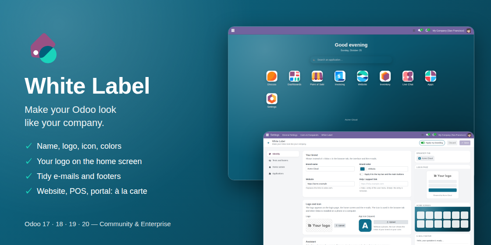

Your logo and background on the Enterprise home screen
A companion of White Label Kit: make your Odoo look like your company.
- Your logo above the applications: left, centered or right, at the height you choose.
- Your background on the home screen and the login page: brand color, gradient or picture.
- A light, rounded menu search bar on phones.


